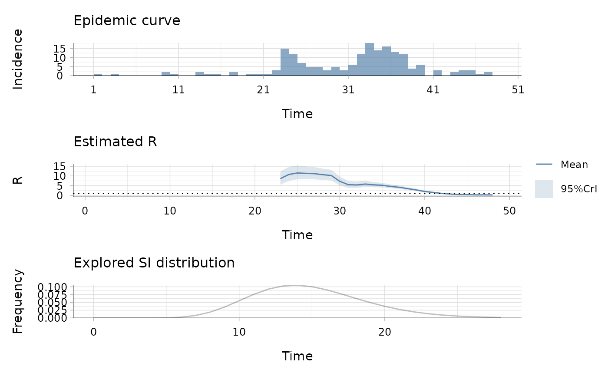

This data set gives:
the daily incidence of onset of symptoms in Hallegoch (Germany) during the 1861 measles epidemic (see source and references),
the discrete daily distribution of the serial interval for measles, assuming a shifted Gamma distribution with mean 14.9 days, standard deviation 3.9 days and shift 1 day (see references).
A list of two elements:
incidence: a vector containing 48 days of observation,
si_distr: a vector containing a set of 38 probabilities.
Groendyke C. et al. (2011) Bayesian Inference for Contact Networks Given Epidemic Data. Scandinavian Journal of Statistics 38(3): 600-616.
Groendyke C. et al. (2011) Bayesian Inference for Contact Networks Given Epidemic Data. Scandinavian Journal of Statistics 38(3): 600-616.
## load data on measles in Hallegoch in 1861 data("Measles1861") ## estimate the reproduction number (method "non_parametric_si") res <- estimate_R(Measles1861$incidence, method="non_parametric_si", config = make_config(list( t_start = seq(17, 42), t_end = seq(23, 48), si_distr = Measles1861$si_distr))) plot(res)#> Warning: It is deprecated to specify `guide = FALSE` to remove a guide. Please use `guide = "none"` instead.## the second plot produced shows, at each each day, ## the estimate of the reproduction number ## over the 7-day window finishing on that day.